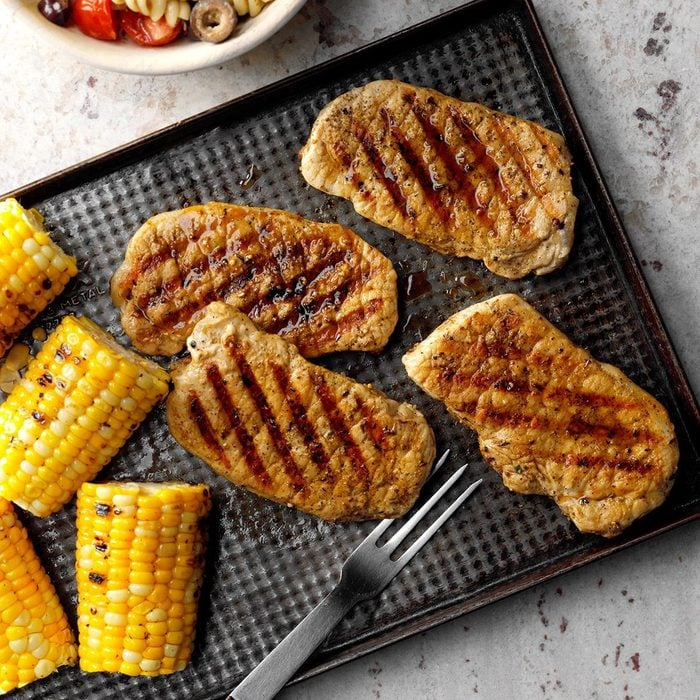

Herbed Pork Chops... FOR THE BOIZ

Freashly herbed pork, lets get it boi!
Rock out of the bland style of daily life with the herby pork chops. These are simple to make, look stunning, and packs flavor that will keep the ladyz happy!
What You Will Need?
- 4 boneless pork loin chops
- 2 teaspoons lemon juice
- 2 tablespoons chopped fresh parsley
- 1/2 teaspoon dried rosemary (crush that shit)
- 1/2 teaspoon dried thyme (crush that shit)
- 1/4 teaspoon pepper
How It Will Go Down!
- Sprinkle both sides of pork with lemon juice and rub with herbs and spices
- grill, covered, on medium heat for 4-5 min per side and take off heat once thermometer reads 145°
- fkin enjoy!
Homepage